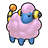

Wild Zone 1 consists of the southern part of Vert Sector 9 and part of South Boulevard. It is accessible from the beginning of the game.
| Pokémon | Level | Circumstances | |
|---|---|---|---|
| Fletchling | 4 | Required catch during Main Mission 03: A New Life in Lumiose City. | |
| Bunnelby | 4 | Required catch during Main Mission 03: A New Life in Lumiose City. | |
|
 |
Mareep (Shiny) | 11 | Available to be captured after completing Side Mission 17: A Shiny Mareep?. |
| Item | Main Mission | Location | Details |
|---|---|---|---|
| Poké Ball (5x) | Main Mission 03: A New Life in Lumiose City | Obtained from Taunie/Urbain before trying to catch Fletchling | |
| Poké Ball (5x) | Main Mission 03: A New Life in Lumiose City | Obtained from Taunie/Urbain before trying to catch Bunnelby | |
| Poké Ball (10x) | Main Mission 03: A New Life in Lumiose City | Obtained from Taunie/Urbain after catching Bunnelby |
| Item | Location | Details |
|---|---|---|
| Poké Ball | On the grass south of the tennis court | |
| Potion | On the ground near the northeastern exit to the zone | |
| Paralyze Heal | Just east of the western exit to the zone | |
| Potion | On the grassy area in the west part of the zone, accessible via the northwestern entrance | |
| Revive | On the roof of the western building complex, accessible from the ladder near the small pond | Requires Rock Smash. |
| TM103 Work Up | On the roof of the western building complex, accessible from the ladder near the small pond | Requires Rock Smash. |
| Pearl | On the roof of the western building complex, accessible from the ladder near the small pond | Requires Rock Smash. |
| Item | Location | Details |
|---|---|---|
| Potion (5x) | Obtained from a man in the grass south of the tennis court | |
| Lumiose Galette | Obtained from the woman at the stall near the eastern exit |
A stall near the western exit to the zone sells Lumiose Galettes for 350.